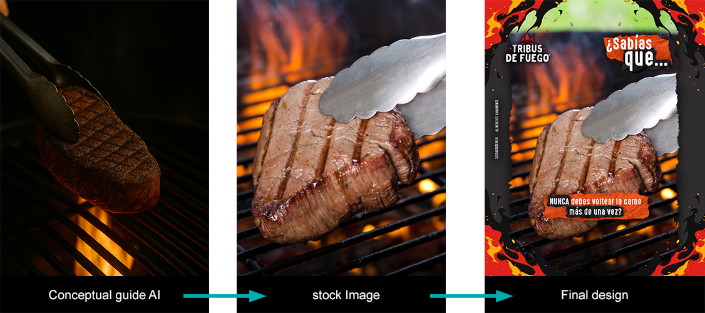
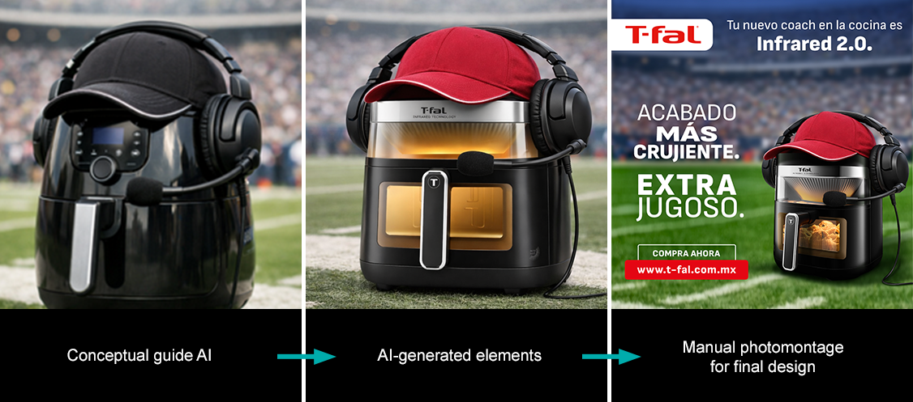
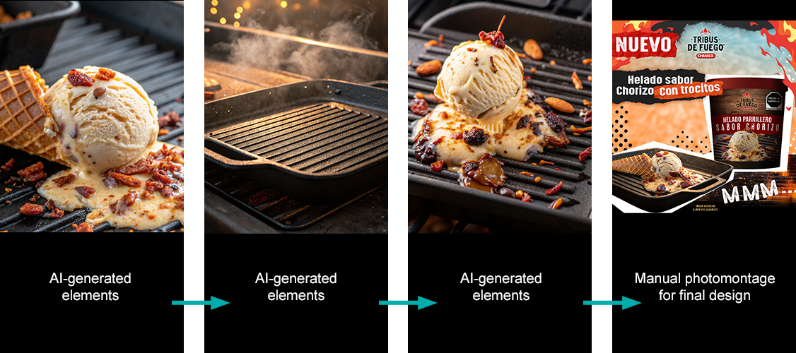
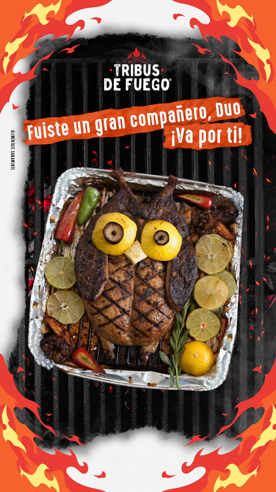

AI Visual Direction & Strategy
AI + Art Direction
Utilizo herramientas como ChatGPT, Copilot, Gemini, Midjourney, Recraft y Magestic (Freepik) no como un sustituto, sino como un aliado estratégico en mi proceso creativo. Mi enfoque integra la IA para la generación de imágenes y optimización de flujos de trabajo, manteniendo siempre el control sobre la composición, la dirección de color y la coherencia visual. Aplicaciones clave: creación de visuales completos adaptados a branding; generación de assets retocados e integrados como fotografía de stock; y colaboración estratégica con Content Managers y conceptualización individual.



